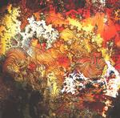

| Artist: | Djam Karet |
| Title: | New Dark Age |
| Label: | Cuneiform Records RUNE 149 |
| Length(s): | 55 minutes |
| Year(s) of release: | 2001 |
| Month of review: | [01/2001] |
| 1) | No Man's Land | 4.43 |
| 2) | Eclipse Of Faith | 2.43 |
| 3) | Web Of Medea | 7.04 |
| 4) | Demon Train | 2.56 |
| 5) | All Clear | 8.31 |
| 6) | Raising Orpheus | 6.56 |
| 7) | Kali's Indifference | 2.28 |
| 8) | Alone With The River Man | 8.03 |
| 9) | Going Home | 9.55 |
| 10) | Eulogy | 2.13 |
All sound samples from New Dark Age appear here by permission of Cuneiform Records.
The music opens more typically proggy on Web Of Medea. The song is more melodic than the previous ones. There is certainly more melody in it, plenty of mesmerizing keyboards and organ, a dark and sinister atmosphere to pull in the unwary. Also the guitar with its high and ethereal sound plays a large role here. The music may again be called psychedelic, but again this sells the band short, because the band focusses more on tension and atmosphere than the average (or even above average) psychedelic band. Demon Train is another short one. Again, the music consist for the most part of loops and effects, these are the most noticable contributions. The track has a droning feel, but later turns for the percussive and the sound becomes cleaner.
All Clear is totally different. Strumming guitar, a groovy rhythm section and an organ make this into an up-beat track in which not every part is to my liking. Some of organ parts sound a bit too standard. The guitar however rocks away nicely and makes up a major part of this track which notwithstanding the "jamming" feel does not fall short on the melodic side. To the music of Djam Karet there is also a kind of world music feel, which we experience in the opening Raising Orpheus. Opening relaxed with whispered vocals and a layer of keyboards underneath it all, we wait until the guitar sets in its lonely tones.
After the short Kali's Indifference, the moody lightheartedness of Alone With The River Man takes its place. Melodic and percussive, a strumming acoustic guitar takes the lead, while a noisy guitar reverberates in the back. At an easy-going gait we are taken along until after two and a half minutes the guitar sets in. The music becomes more lively here with the introduction of this meandering guitar playing an intense melodic solo and the Latin American percussion. It does seem to me that this track might have been split into a number of separate ones. After the loud clear guitar the music bounces back to a relaxed combination of acoustic guitar, percussion and layers of synth. One is again tempted to think of the Ozrics here.
Going Home is the longest track on the album and opens in a sad depressed fashion. Again the melodies are well done on this track. However, especially when the guitar plays its solo, the rhythmic support is a bit too unadventurous, too easy-going. They make up for it later. The final track is again a drone with vocal effects over them.